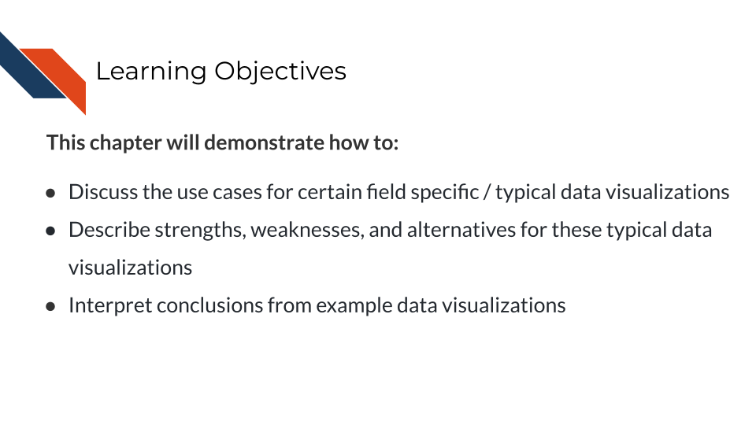
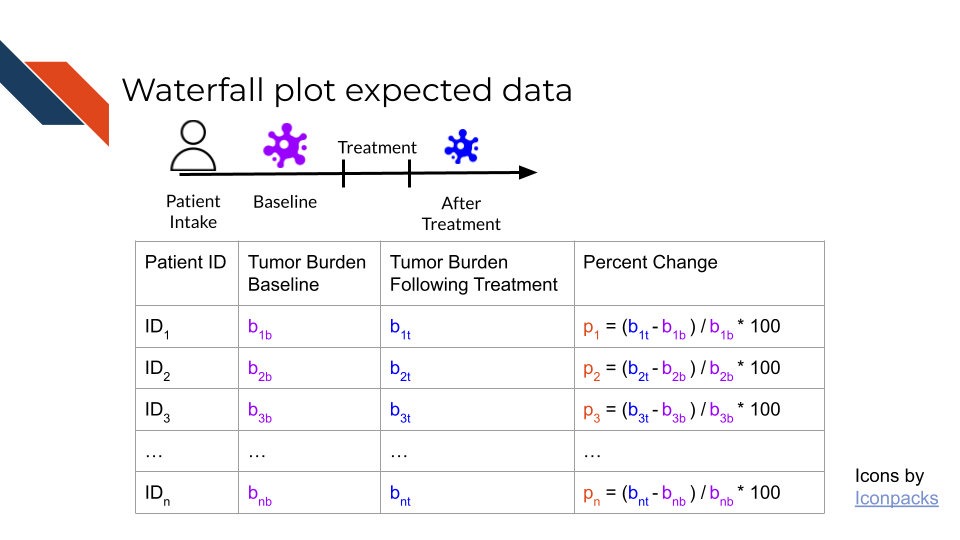
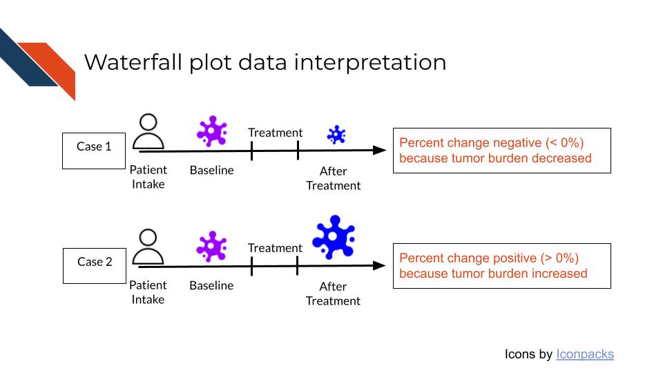
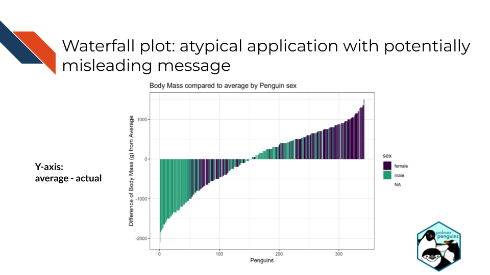
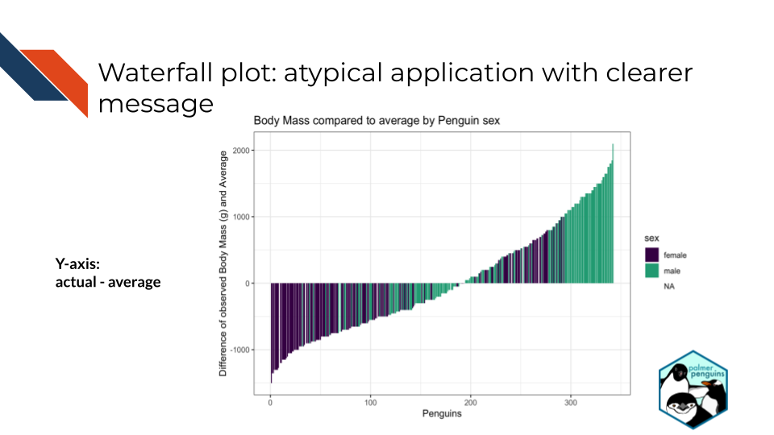
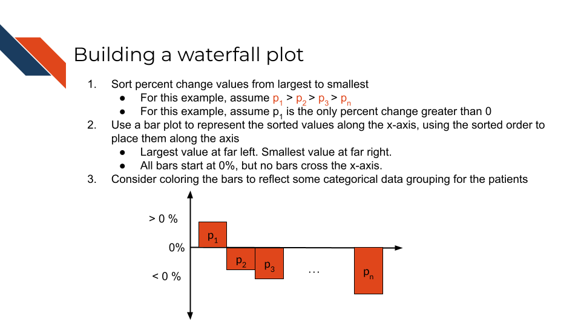

6 Field Specific Visualizations
6.1 Learning Objectives
6.2 Caterpillar Plot
Description: Displays numerical point estimates (such as odds ratios or coefficient effect estimates) as the caterpillar body and their variation or the confidence level as caterpillar legs. Caterpillar plots are practically the same as Forest plots except for one major difference: the categories are ordered by magnitude of the point estimates.
When to use Caterpillar plots:
- Numerical data & categorical data
- Several variables are required
- Primary data encodings are points and lines
- Used to find a ranking or for meta-analyses or comparing models or odds ratios
Strengths and Weaknesses
Strengths
- Provides comparison to a reference line (e.g., baseline or null effect)
- Efficient readability since values are ordered by magnitude
- Displays variation both intra- and inter-study
Weaknesses
- Cluttered and difficult to read if lots of studies or models are included
- A lot of context and information are in the axis labels
- Plot is just showing the effect estimates and uncertainty but no further context such as bias
Include an example plot and how to interpret
6.3 Waterfall Plot
Description: Bar charts which show treatment effect. The numerical axis is compared to a baseline. The bars are arranged or ordered according to magnitude and each bar typically corresponds to a different patient or sample (Gillespie 2012).
When to use Waterfall plots:
- Numerical data (may have categorical data such as summarized treatment response or demographics for color)
- Minimum of 1 variable if the difference between patient/sample and baseline is already computed, but a minimum of 2 variables otherwise
- Primary data encodings are bars and position
- Typically used to show patient response to a treatment but the design can be used for other use cases around this theme
Strengths, Weaknesses, and Alternatives
Strengths
- Displays patient or sample response heterogeneity within one snapshot
Weaknesses
- The snapshot compares two time points but not a range of time.
- For tumor response, there’s an accepted notion of what above or below the baseline means but this might not be true for other applications
- Each patient requires two analogous timepoints (e.g., baseline and evaluation following intervention) to be included in this visualization. A corresponding caption or text within a report would need to specify if any patients don’t have corresponding data for both timepoints and aren’t represented within the visualization.
Alternatives
- Spider plots incorporate time
- Swimmer plots incorporate time but lose the comparison to baseline
- Forest or Caterpillar plots can be use for treatment effect
- Kaplan-Meier curves can be used for outcome
- Heatmaps can be used to incorporate time: Each row would be a patient (y-axis) and the columns could be time. Use color to communicate the change from baseline. Perhaps consider faceting or arranging samples according to response category.
Main Example:
An example of the Waterfall plot from the biomedical, bioinformatics, or cancer informatics literature is Figure 2A from Kwak et al. (2010) which shows the percent change in tumor burden for 79 patients, comparing tumor burden after treatment to a baseline measurement prior to the intervention. Each patient is represented by a bar and the bars are colored to represent a descriptive category related to the patient’s disease state. A dashed line at -30% may represent the average change in tumor burden but this is unclear.
This plot is comparing the percent change in tumor burden for a set of patients. Tumor burden for each patient is being defined at two specific points in time: 1) their original baseline and 2) their “current” tumor burden at the time of data collection after treatment. Each patient has their own baseline and current values – they are likely not sharing a baseline value. Because the date is being translated into percent change, values across patients can be compared more easily: specifically evaluating if tumor burden increased or decreased. The numerical data (percent change) that is being represented on the y-axis is defined as (tumor burden following treatment - tumor burden baseline) / tumor burden baseline * 100% for each patient.

Connecting these percent change values to the underlying biological data, there are 3 possibilities:
- Tumor burden decreased after the intervention. Then the percent change will be negative and be represented by a bar below the x-axis in the plot.
- Tumor burden increased after the intervention. Then the percent change will be positive and be represented by a bar above the x-axis in the plot.
- Tumor burden remained unchanged after the intervention. Then then the percent change is 0% and the bar will be largely invisible – neither above nor below the x-axis of the plot.

Interpretation: Connecting back to the Kwak et al. (2010) example of a waterfall plot from the biomedical, bioinformatics, or cancer informatics literature:
- Most patients had an observed reduction in tumor burden with only 4 showing in increase in tumor burden.
- Most patients exhibited a response to treatment with regards to disease state, though this number is fewer than the number that had an observed reduction in tumor burden.
- 5 patients showed a 100% change meaning that there was a total disappearance of tumor burden after the intervention.
- However, of those 5 only one exhibited a complete response to treatment with regards to disease state.
- Notice that we have to count the number of bars that exhibit a certain characteristic (above/below the x-axis or specific color/category). Generally with this plot type, the audience will have an easier time interpreting trends and using abstractions to describe it. The plot allows audiences to observe the overall heterogeneity and range of the data quickly, but not precise group numbers. It is best to provide specific counts for specific characteristics either in a caption or the text of a report.
Other examples:
In relation to the idea that Waterfall plots typically compare two timepoints only, not a range of time, consider the example from Nishino et al. (2010). In Figure 2 each patient is represented by 2 side-by-side (or grouped) bars. The use of the grouped bar chart here is comparing what the percent change would be depending upon which version of guidelines the investigators used to evaluate the tumor (RECIST 1.0 vs 1.1). However, researchers could potentially use a grouped bar chart approach to show multiple timepoints if it was important for the point.
An example from the biomedical, bioinformatics, or cancer informatics literature that uses the waterfall plot for use other than displaying tumor response can be seen in Figure 3B from Lim et al. (2024). In this case, the authors use a waterfall plot for model validation, having built a model to relate the volume of open aortic repair procedures at hospitals with associated patient mortality rates.
Finally, this example using data from the Palmer Penguins dataset (Horst, Hill, and Gorman 2020), shows the care that must be taken when using a waterfall plot for an atypical application where there is no standard notion of what above or below the x-axis means.
The Palmer Penguins dataset provides body mass measurements (in grams) as well as the sex for over 300 penguins. There’s a small percentage of missing data for the sex variable (e.g., penguins with unknown sex). We can find the overall average body mass and then build a waterfall plot that represents the difference between the average body mass and the actual body mass of each penguin. Then we can color each bar by the sex of the penguin. In this first example, the y-axis is plotting the difference of the actual from the average (average - actual). This provides a potentially misleading graphic where the female penguins are primarily above the x-axis baseline (average) which may give readers the initial impressions that female penguins have the highest body masses within this sample. However, that is not the case.

Therefore, if we switch the y-axis to represent the difference of the average from the actual (actual - average), this now shows the male penguins primarily above the x-axis baseline (average) – which gives the proper impression that the male penguins tend to have higher body masses than the female penguins.

Standard plotting libraries can be used to make waterfall plots since they are a specialized form of bar plots. Just ensure that your data is sorted and/or has a variable that assigns the x-position based on the sorting to ensure the bars appear in the proper order.
The process to make a waterfall plot is as follows:
- Sort percent change values from largest (highest positive) to smallest (lowest negative). There may be ties.
- Position will be used place the percent change values along the x-axis.
- The patient with the largest percent change will be represented by the furthest left bar.
- The patient with the smallest percent change will be represented by the furthest right bar.
- Use a bar to represent each patient and their percent change values.
- All bars start at 0% (the x-axis).
- No bars should cross the x-axis.
- Bars above the x-axis reflect an increase in tumor burden.
- Bars below the y-axis reflect a decrease in tumor burden.
- Some bars may not be visible because they represent patients with 0% change.
- Consider coloring the bars to reflect some categorical data grouping for the patients.
- You may want to add a dashed line and label reflecting the average percent change for the cohort of patients or some other summary statistic.

6.4 Kaplan-Meier (KM) Curve (definitely)
Description: Filler description
When to use Kaplan-Meier curves:
- Type of data
- Number of variables
- Primary data encodings
- Used for ….
Include an example plot and how to interpret
6.5 Volcano Plot (definitely)
Description: Filler description
When to use Volcano plots:
- Type of data
- Number of variables
- Primary data encodings
- Used for ….
Include an example plot and how to interpret
6.6 Confusion Matrix
Description: Filler description
When to use Confusion matrices:
- Type of data
- Number of variables
- Primary data encodings
- Used for ….
Include an example plot and how to interpret
Gillespie, Theresa W. 2012. “Understanding Waterfall Plots.” Journal of the Advanced Practitioner in Oncology 3 (2): 106–11. https://pmc.ncbi.nlm.nih.gov/articles/PMC4093310/.
Horst, Allison Marie, Alison Presmanes Hill, and Kristen B Gorman. 2020. Palmerpenguins: Palmer Archipelago (Antarctica) Penguin Data. https://doi.org/10.5281/zenodo.3960218.
Kwak, Eunice L., Yung-Jue Bang, D. Ross Camidge, Alice T. Shaw, Benjamin Solomon, Robert G. Maki, Sai-Hong I. Ou, et al. 2010. “Anaplastic Lymphoma Kinase Inhibition in Non–Small-Cell Lung Cancer.” New England Journal of Medicine 363 (18): 1693–703. https://doi.org/10.1056/NEJMoa1006448.
Lim, Sungho, Omkar Pawar, Alexandre d’Audiffret, Anuja Sarode, Benjamin D. Colvard, and Jae S. Cho. 2024. “Endovascular Aneurysm Repair-First Strategy for Ruptured Abdominal Aortic Aneurysm Might Not Be Applicable to All Cases.” Annals of Vascular Surgery 106: 386–93. https://doi.org/10.1016/j.avsg.2024.03.012.
Nishino, Mizuki, David M. Jackman, Hiroto Hatabu, Beow Y. Yeap, Leigh-Anne Cioffredi, Jeffrey T. Yap, Pasi A. Jänne, Bruce E. Johnson, and Annick D. Van den Abbeele. 2010. “New Response Evaluation Criteria in Solid Tumors (RECIST) Guidelines for Advanced Non–Small Cell Lung Cancer: Comparison with Original RECIST and Impact on Assessment of Tumor Response to Targeted Therapy.” American Journal of Roentgenology 195 (3): W221–28. https://doi.org/10.2214/AJR.09.3928.